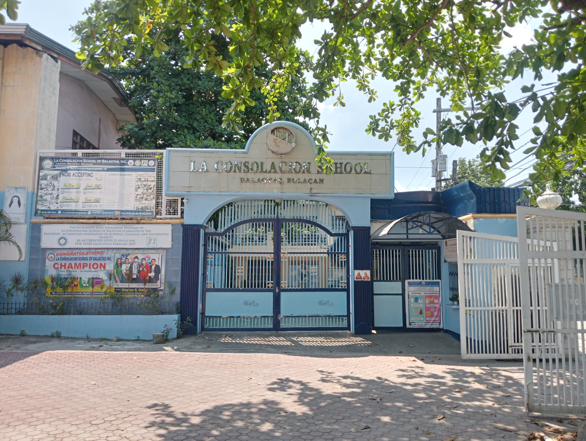
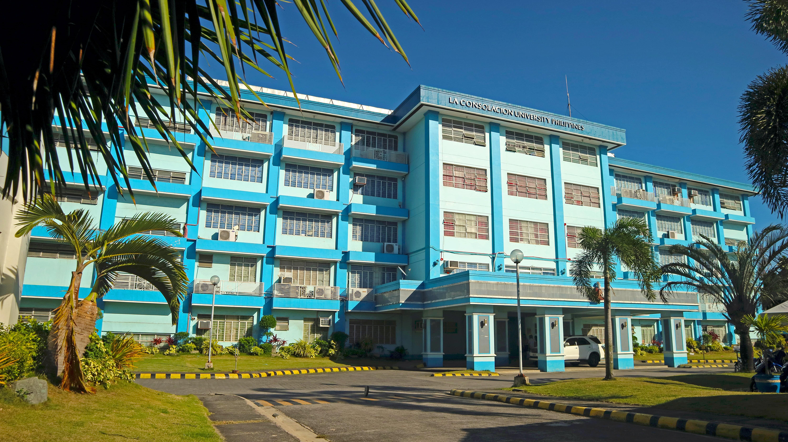

La Consolacion School Balagtas
High School
★ C.A.T AWARD★ SCB AWARD
COMPUTER ENGINEERING GRADUATE
Hello, I’m
VIBECODER
TECHNOLOGY ENTHUSIAST
Building thoughtful hardware and software experiences with a practical engineering mindset.
01 — ABOUT ME


I’m a Computer Engineering graduate with a strong interest in computer systems, networking, and information security.
My engineering background introduced me to hardware integration, programming, embedded systems, and software development. I’m now expanding my knowledge toward network engineering and cybersecurity, focusing on how systems communicate, how infrastructure is managed, and how digital environments can be secured.
I believe technical growth comes from continuous learning, practical experimentation, and solving real-world problems. This portfolio serves as a record of that journey.
02 — ROADMAP
A living map of the skills I have built, the concepts I am learning, and the direction I am taking next.
03 — CREDENTIALS
Technical certificates, training milestones, and professional experience documentation.
NEXT MILESTONES
04 — EDUCATION
The schools, experiences, and achievements that shaped my foundation in technology and computer engineering.

High School

STEM
Bachelor of Science in Computer Engineering
05 — SELECTED WORK
Projects that connect hardware, software, and real-world problem solving.
06 — TOOLKIT
No arbitrary percentages. These labels reflect my current experience and learning status.
07 — TECHNICAL JOURNAL
A place for practical notes, experiments, and evidence as the journey develops.
This section is ready for Packet Tracer topologies, subnetting notes, Linux exercises, and other documented practice. Nothing is presented as completed until it has actually been done.
08 — CONTACT
If you’d like to talk about a project, an opportunity, or the path from engineering into infrastructure, you can reach me here.